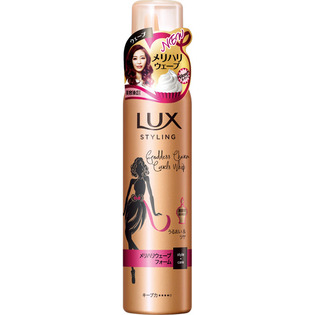

返回列表
产品名称：ラックス 美容液スタイリング メリハリウェーブフォーム

ユニリーバ・ジャパン ラックス 美容液スタイリング メリハリウェーブフォーム １３０ｇ
メーカー ユニリーバ・ジャパン
JANコード 4902111736754
商品の特徴
美容液成分配合
うるおい＆ツヤ
キープ力 ●●●●○
- 成分・分量
- 水、エタノール、LPG、ジメチコノール/シルセスキオキサン)コポリマー、ポリクオタニウム-11、トレハロース、セテアレス-50、アジピン酸、炭酸アンモニウム、メドウフォーム-δ-ラクトン、アルガニアスピノサ核油、ホホバ種子油、フェニルトリメチコン、メトキシケイヒ酸エチルヘキシル、アルギニン、クエン酸、ラウリル硫酸Na、
ラウレス-23、BHT、EDTA-2Na、リン酸K、メチルパラベン、サリチル酸Na、香料、
- 用法及び用量
- 乾いた髪、タオルドライした髪に適量(セミロングでピンポン玉2～3コ)を、ウェーブを出したい部分になじませる。